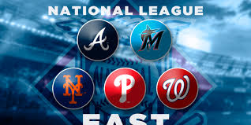

National League East Teams
The National League East division was created in 1969. It currently consists of five teams: the Atlanta Braves, Miami Marlins, New York Mets, Philadelphia Phillies, and Washington Nationals. The division is notable as one of two in Major League Baseball where all member teams have won at least one World Series title. The Atlanta Braves have won the most division titles with 18.
Atlanta Braves
The Atlanta Braves are the oldest continuously operating professional sports franchise in America, founded in Boston in 1871. They moved to Milwaukee in 1953 and then to Atlanta in 1966. They play at Truist Park. The Braves experienced a remarkable run from 1991 to 2005, winning 14 consecutive division titles and a World Series in 1995. They also won World Series titles in 1914, 1957, and 2021. Their team colors are navy blue, scarlet red, and silver. Key players include Hank Aaron, Warren Spahn, Eddie Mathews, Greg Maddux, Tom Glavine, John Smoltz, Chipper Jones, and Ronald Acuña Jr.
Miami Marlins
The Miami Marlins were established as the Florida Marlins in 1993, joining the National League as an expansion team. They play at LoanDepot Park, which opened in 2012. Their team colors are midnight black, Miami blue, Caliente red, and slate grey. The Marlins have won two World Series championships (1997 and 2003) and two National League pennants (1997 and 2003). Notably, they have won the World Series on the only two occasions they made the postseason. Key players include Ivan Rodriguez, Giancarlo Stanton, Sandy Alcántara, Miguel Cabrera, and José Fernández.
New York Mets
The New York Mets were founded in 1962 to replace the departed Brooklyn Dodgers and New York Giants. They initially played at the Polo Grounds before moving to Shea Stadium in 1964 and later to Citi Field in 2009. Their colors evoke the blue of the Dodgers and the orange of the Giants. The Mets have won two World Series titles (1969 and 1986) and five National League pennants. They are tied with the Houston Astros for the most pennants won by an expansion team in MLB history. The Mets are also the only expansion team to have clinched multiple World Series championships at home. Key players include Tom Seaver, Mike Piazza, Nolan Ryan, Darryl Strawberry, Dwight Gooden, and Francisco Lindor.
Philadelphia Phillies
The Philadelphia Phillies are the oldest, continuous, one-name, one-city franchise in all of professional American sports, founded in 1883. They play at Citizens Bank Park. Their team colors are red and blue. The Phillies have won two World Series championships, in 1980 and 2008. They have also appeared in seven World Series, with two recent appearances in 2009 and 2022. Key players include Mike Schmidt, Steve Carlton, Jimmy Rollins, Ryan Howard, Chase Utley, and Bryce Harper.
Washington Nationals
The Washington Nationals franchise began as the Montreal Expos in 1969 and relocated to Washington D.C. in 2005. They play at Nationals Park. The team won its first World Series championship in 2019. Their colors are scarlet red and navy blue. Key players include Stephen Strasburg, Ryan Zimmerman, Max Scherzer, and Juan Soto.